A
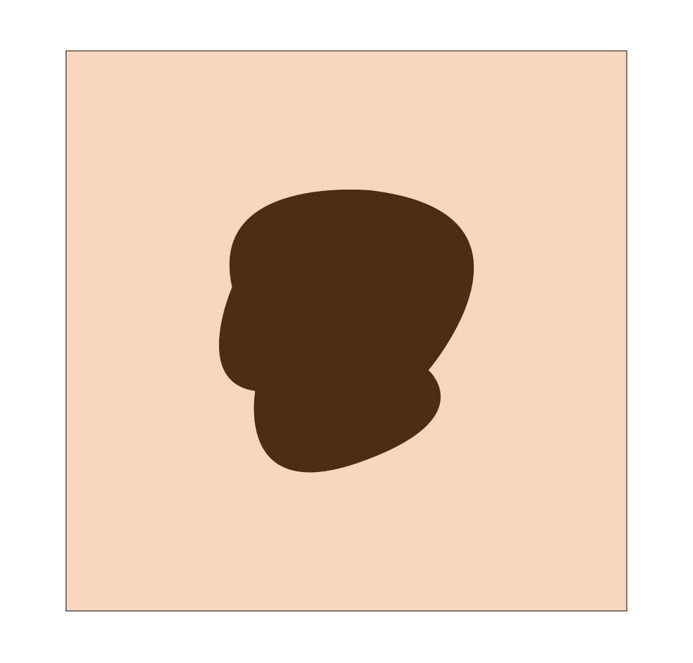
B
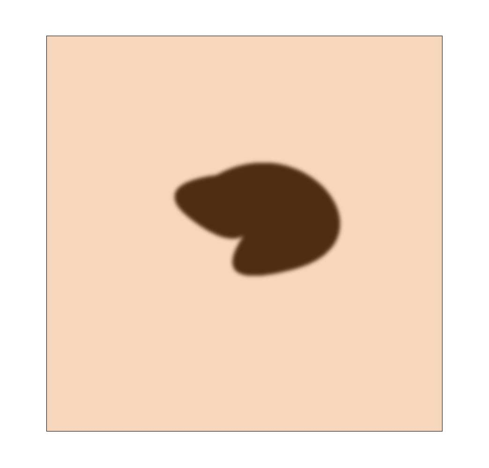
C
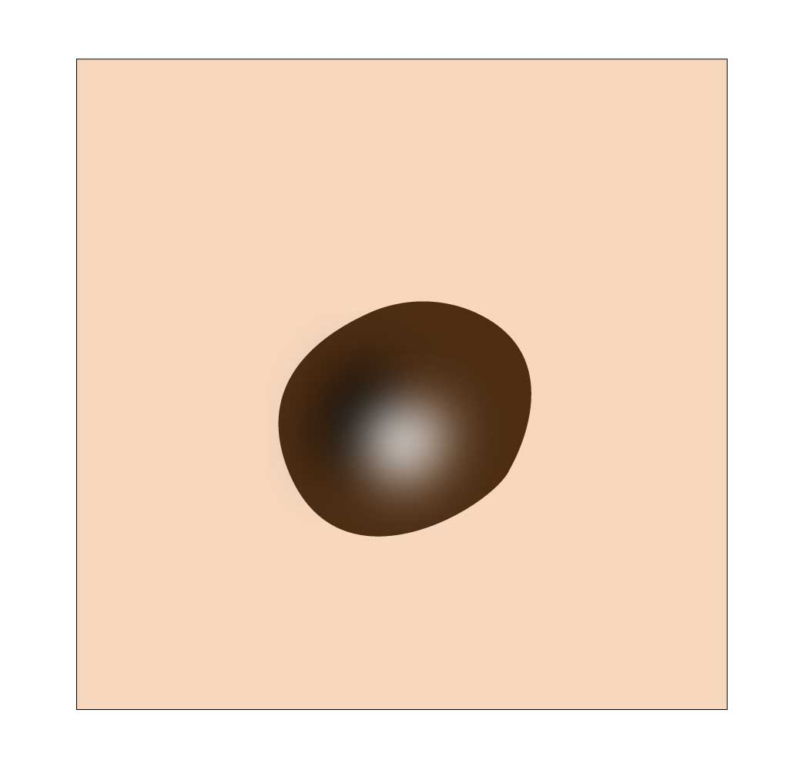
D
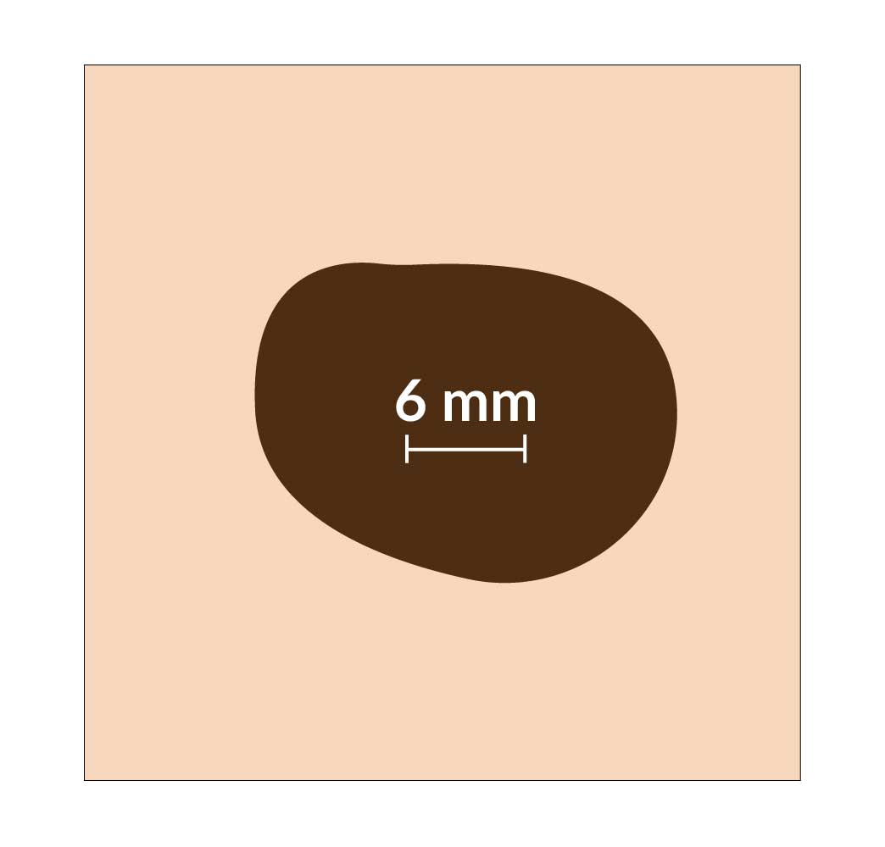
E
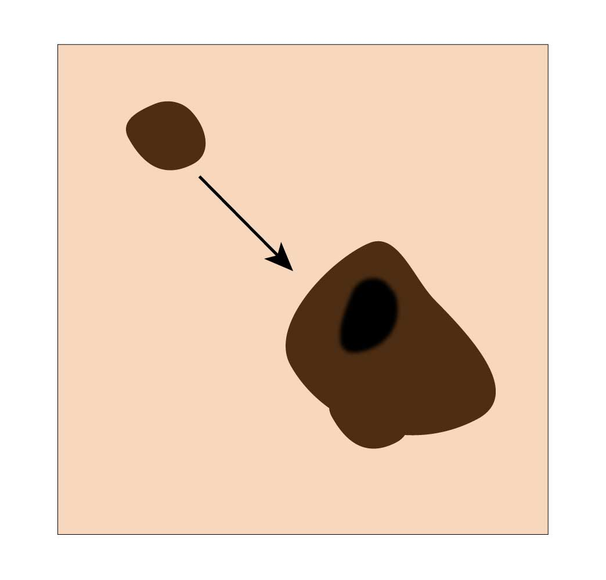
U
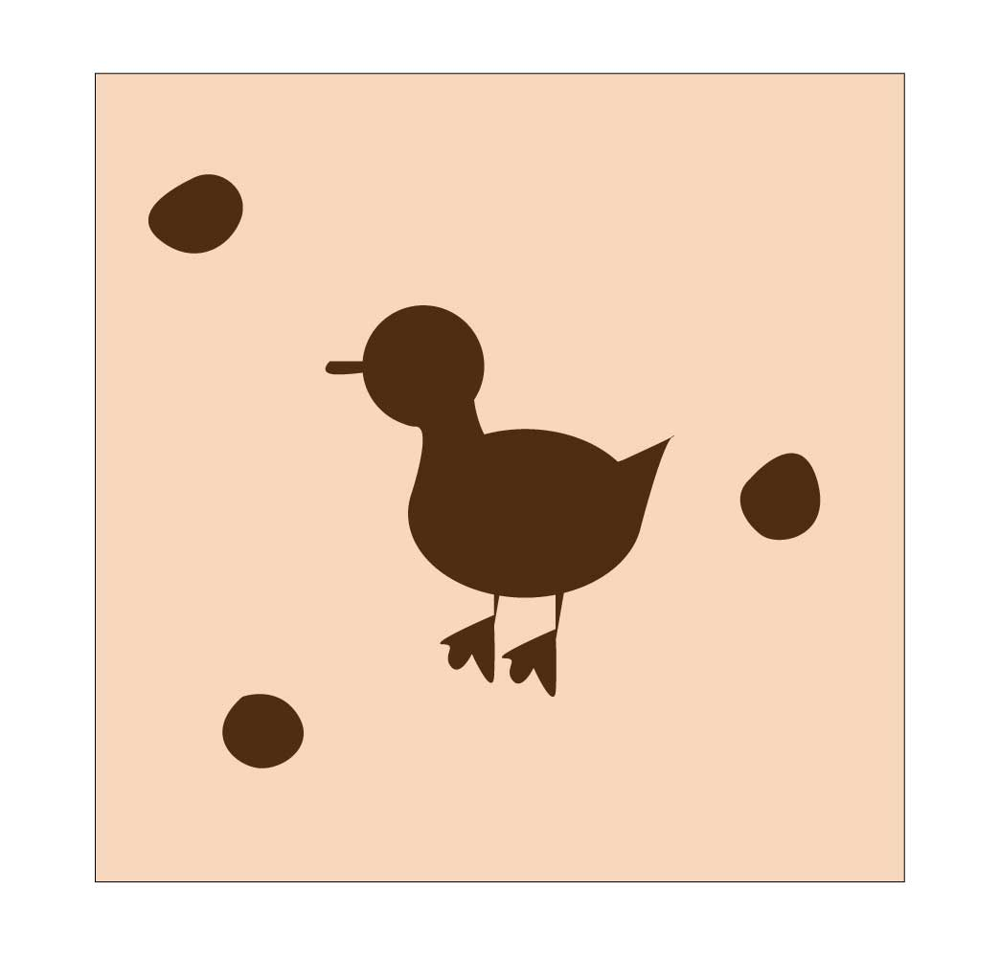
![An illustration of a man with six warning signs of melanoma,
which are assymetry (if one half of a mole is unlike the other half), border (if a mole has has an
irregular, scalloped, or poorly defined border), color (if a mole has varying colors within itself,
including shades of tan, brown, black, white, red, or blue), diameter (if a mole greater than 6
millimeters, or about the size of a pencil eraser), evolving (if a mole is changing in size, shape
or color). Dr. Casterline added that if a mole does not match the pattern of a person's other moles,
it might be a sign of melanoma, which is known as the ugly duckling sign.](images/stickman.jpg)
By Mariia Novoselia | November 23, 2025
Melanoma of the skin is the seventh most common cancer site in Missouri, according to Missouri Cancer Registry. More than 7,500 melanoma cases were recorded in the state between 2018 and 2022.
The risk of getting melanoma is based on lifetime UV exposure, said Ben Casterline, assistant professor of dermatology at the University of Missouri and a dermatologist at MU Health Care. Even though UV exposure is lower in winter months, it is still potent.
"If you're protecting yourself well in the summer but not protecting yourself in the winter, you're getting exposed to a lot of UV radiation," Casterline said. "Over your life time, that's gonna add up into real skin cancer risk."
Andrew Iliff, medical oncologist and hematologist with the Missouri Cancer Associates, said UV radation can reflect from snow, ice and water, increasing the amount of UV radiation a person would normally get.
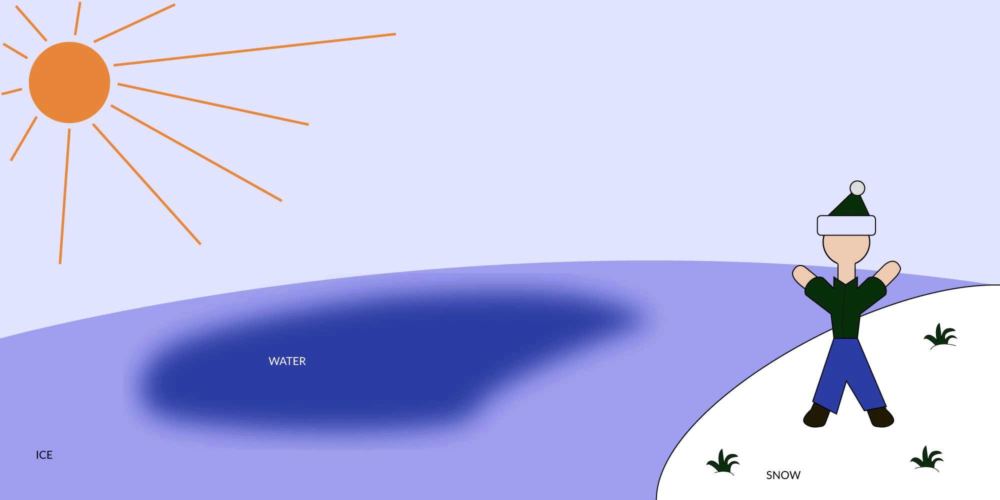
The American Academy of Dermatology created a mnemonic device to remember potential warning signs of melanoma: ABCDE.
Iliff said that people should ask their loved ones to check their skin for these signs in places that might be difficult to look at on their own, such as the back.
Hover over each of the dots to learn the ABCs of melanoma.






People with fair skin, light-colored hair, blue eyes are more likely to get melanomas, Casterline said. Other factors that increase the chance of developing a melanoma include having melanoma before, as well as having a family history of melanoma, unusual brown spots or a lot of moles, he said.
In Missouri, white people are 38 times more likely to get melanoma than people of other races or ethinicities.
Many melanomas are caught at an early stage when they are confined to the skin and can often be cured with surgery alone, Casterline said. At later stages, melanoma can spread to lymph nodes or other organs, which means its treatment becomes more complex and may involve systemic therapies. Casterline said that immunotherapy, which activates the immune system to fight off melanoma, has been really effective.
"Immunotherapy has absolutely been a game changer in a lot of cancers, but particularly melanoma," Iliff said.
At stage 0, a melanoma is confined to the epidermal region of skin.
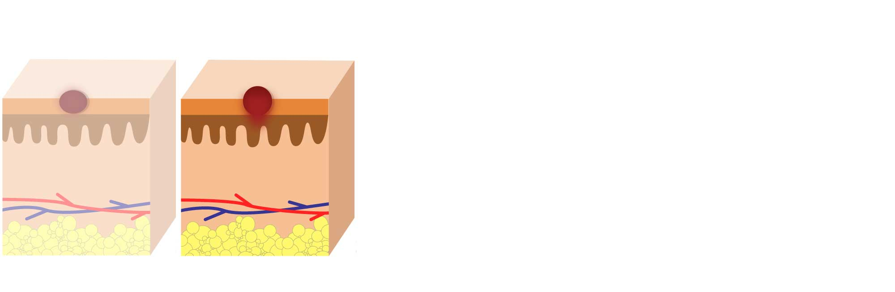
At stage 1, a melanoma is still very thin and localized.
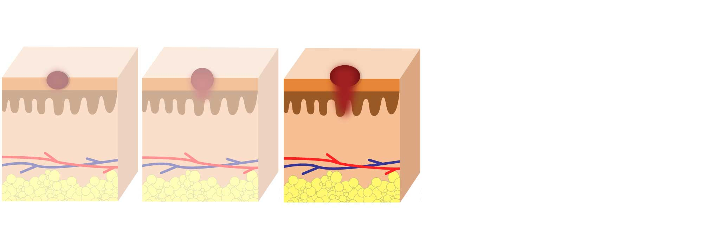
At stage 2, a melanoma is still localized but is now thicker than it was at stage 1.
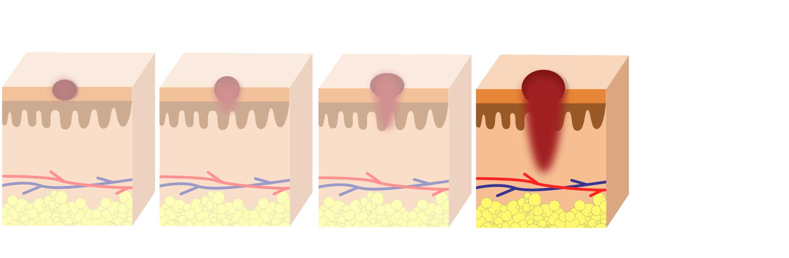
At stage 3, a melanoma has spread to lymph nodes.
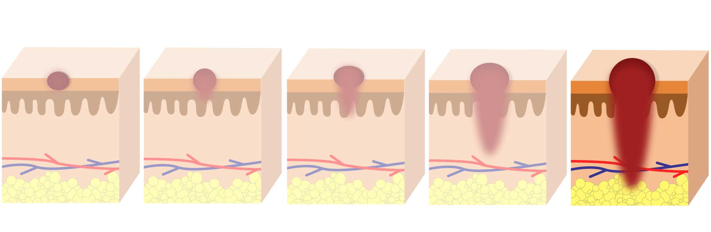
At stage 4, a melanoma has spread to other organs.
In Missouri, age-adjusted melanoma death rate is 2.3 per 100,000 people. Many counties
across Missouri, however, have a higher melanoma death rate.
Boone County has the rate of
2.7 per 100,000 people. In some counties, the death rate is almost twice
as high as the state average.
Melanoma death rate among white people in Missouri is 2.6 per 100,000 people, according to the Missouri Cancer Registry and Research Center. Death rates for other racial and ethinic groups are undisclosed for confidentiality reasons.
Hover over the dots to learn Casterline's recommendations on how to protect yourself from melanoma.